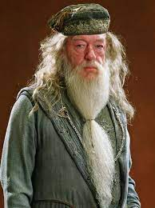
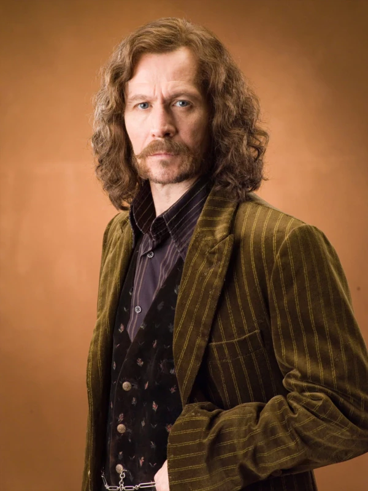

A Ordem da Fênix é uma organização secreta formada por bruxos e bruxas dedicados a combater Lord Voldemort e seus seguidores, os Comensais da Morte, na série Harry Potter de J.K. Rowling. Aqui estão alguns pontos-chave sobre a Ordem da Fênix.
Formação: A Ordem da Fênix foi fundada por Alvo Dumbledore durante a Primeira Guerra Bruxa, quando Voldemort estava no auge de seu poder. Seu objetivo era unir bruxos e bruxas corajosos para lutar contra as forças das trevas.
Missão: A principal missão da Ordem da Fênix é combater Voldemort e seus seguidores, protegendo a comunidade bruxa e lutando pela justiça e liberdade. Eles trabalham para desmantelar as atividades dos Comensais da Morte, proteger pessoas em perigo e fornecer apoio à resistência contra o regime das trevas.
Atividades: A Ordem realiza uma variedade de atividades clandestinas, incluindo vigilância, investigações, resgate e sabotagem das operações de Voldemort. Eles também ajudam a proteger e treinar jovens bruxos e bruxas que estão em risco de serem recrutados por Voldemort.
Métodos Secretos: A Ordem da Fênix opera em segredo para evitar a detecção do Ministério da Magia e dos Comensais da Morte. Eles se comunicam através de uma rede de membros confiáveis e usam locais secretos, como a Casa dos Gritos e a Ordem da Fênix da Rua Grimmauld, como bases de operações.
Papel durante a Segunda Guerra Bruxa: Durante a Segunda Guerra Bruxa, a Ordem da Fênix desempenha um papel crucial na luta contra Voldemort e na proteção da comunidade bruxa. Eles trabalham em estreita colaboração com Harry Potter e seus amigos para derrotar Voldemort e seus seguidores.

Alvo Dumbledore
O renomado diretor de Hogwarts e um dos bruxos mais poderosos e sábios de sua época. Ele é o líder da Ordem e desempenha um papel crucial na luta contra Voldemort.

Sirius Black
Um dos Marotos, amigo próximo de Tiago Potter e padrinho de Harry Potter. Ele é um membro leal da Ordem que luta para proteger Harry e derrotar Voldemort.
Remo Lupin
Um lobisomem e amigo de infância de Tiago Potter. Ele é um professor em Hogwarts e um membro valioso da Ordem, trazendo sua experiência e habilidades únicas para a luta contra Voldemort.
Ninfadora Tonks
Uma bruxa metamorfomaga e membro ativo da Ordem. Ela é conhecida por sua coragem e habilidades mágicas excepcionais, e se torna próxima de Harry Potter.
Alastor Moody
Um renomado auror aposentado e membro experiente da Ordem. Ele traz sua experiência em combate e vigilância para ajudar a proteger a comunidade bruxa.
Minerva McGonagall
A vice-diretora de Hogwarts e professora de Transfiguração. Ela é uma bruxa poderosa e respeitada que se junta à Ordem para lutar contra Voldemort.
Kingsley Shacklebolt
Um auror habilidoso e valente que trabalha secretamente para a Ordem. Ele desempenha um papel importante em várias operações contra Voldemort.
Arthur e Molly Weasley
Pais de uma grande família de bruxos, os Weasley são membros ativos da Ordem que lutam para proteger seus entes queridos e a comunidade bruxa como um todo.